６ 検体検査
６－１ 検体検査 履歴から依頼
（１） 「検体」ボタンをクリックします
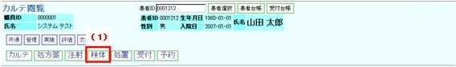
（２） 検体検査依頼の履歴が表示されます
（３） 履歴表示から依頼したい履歴日をクリックします
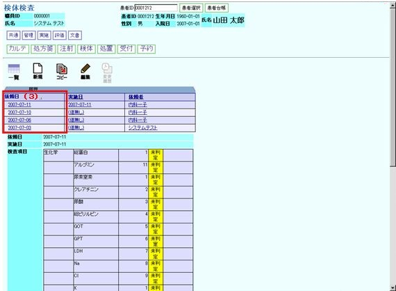
（４） 選択した日付の依頼内容が画面左下部に表示されます。
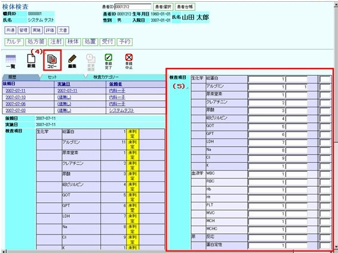
コピーアイコンをクリックします
（５） 右画面にオーダがコピーされます
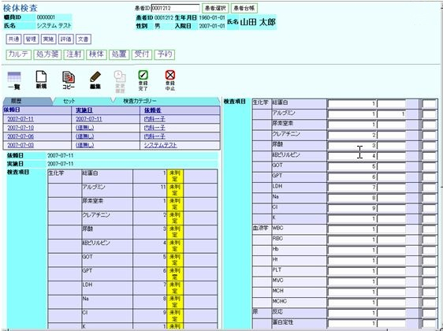
（６） 検査項目リストの検査項目を編集します
（７） 登録完了アイコンをクリックします
（８） 履歴からの検体検査が依頼されます
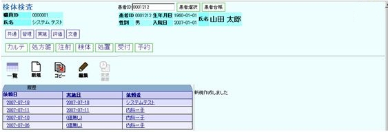
６－２ 検体検査 セットから依頼
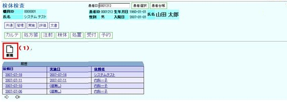
（１） 新規アイコンをクリックします
（２） 初期画面が表示されます
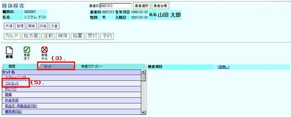
（３） セットタブをクリックします
（４） セット一覧が表示されます
（５） 例えばフルセットをクリックします
（６） フルセットの検査項目が右画面に表示されます
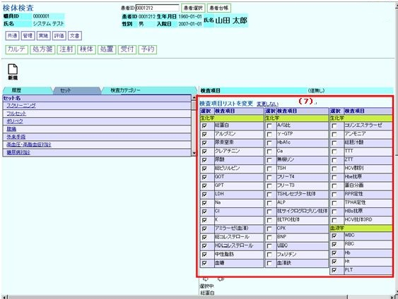
（７） 検査する項目のチェックボックスにチェックを入れます
（８） 「選択完了」をクリックします
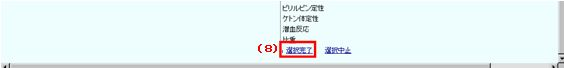
（９） 登録完了アイコンをクリックします
（１０） セットからの検体検査が依頼されます
６－３ 検体検査 カテゴリーから依頼
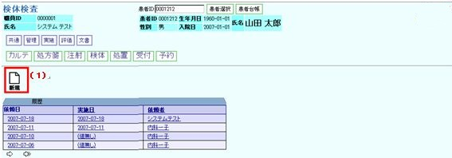
（１） 新規アイコンをクリックします
（２） 初期画面が表示されます
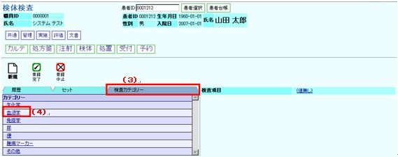
（３） 検査カテゴリータブをクリックします
（４） 例えば、血液学をクリックします
（５） カテゴリーの下段に検査項目が表示されます
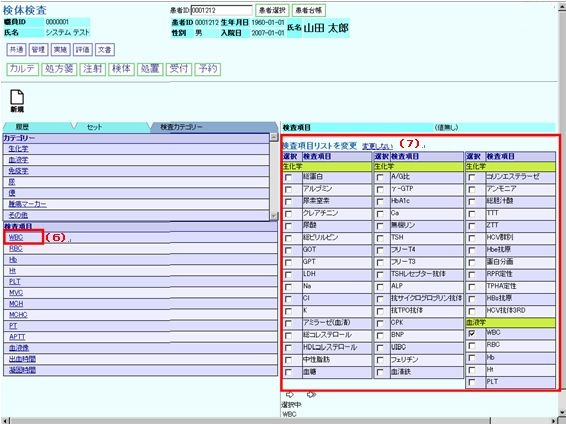
（６） 例えば、WBCをクリックします
（７） 右画面にカテゴリーに属する検査項目が表示されます
※WBCのチェックボックスには初めからチェックされています
（８） 右画面にカテゴリーに属する検査項目が表示されます
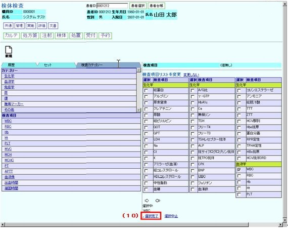
（９） 追加の検査項目があれば本画面でチェックボックスにチェックを入れます
（１０） 選択完了をクリックします
（１１） 本画面が表示されます
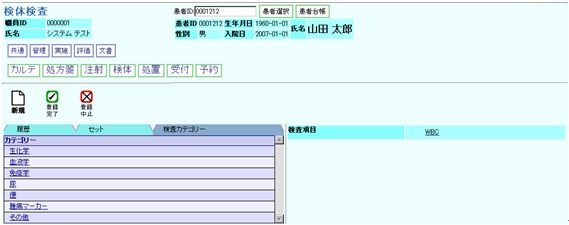
（１２） 登録完了アイコンをクリックします
（１３） 検査カテゴリーからの検体検査が依頼されます